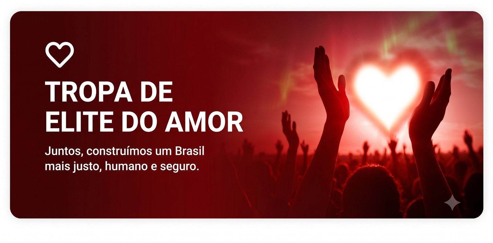

Cuidado
Proteção às pessoas, às famílias, às vítimas e aos grupos vulneráveis.
Sou delegado de carreira da Polícia Civil de Goiás, filho de uma professora da rede pública e de um imigrante palestino que recomeçou a vida do zero. São 12 anos enfrentando o crime — e a certeza de que segurança de verdade se faz com cuidado, prevenção e comunidade, para que cada goiano volte vivo para casa.
Entre para a Tropa de Elite do Amor e venha construir esse Goiás com a gente.

Segurança não é espetáculo. É cuidado, prevenção e comunidade.
Yasser Martins Yassine é delegado da Polícia Civil de Goiás. Filho de uma professora cearense da rede pública e de um pai palestino que chegou ao Brasil aos 18 anos como vendedor ambulante, carrega na história a origem humilde e a certeza de que as políticas sociais transformam vidas.
Foi advogado, professor e servidor da Justiça antes de virar delegado. Hoje, com mais de 350 mil pessoas acompanhando seu trabalho nas redes, leva para a política a mesma bandeira do dia a dia na delegacia: segurança com cuidado, prevenção e comunidade.
Filho de mãe cearense, professora de artes da rede pública, e de pai palestino que chegou ao Brasil aos 18 anos como vendedor ambulante.
Advogado criminalista, professor universitário e servidor do Tribunal de Justiça do DF e dos Territórios (TJDFT).
12 anos na Polícia Civil de Goiás, com atuação no Entorno do DF. Chefiou a Delegacia da Mulher (DEAM) em Formosa.
Pós-graduado pela FESMPDFT, MBA em Gestão de Segurança Pública (UnB) e mestrado em Segurança Pública (UFG).
Pré-candidato a deputado estadual pelo PT-GO, com foco em todo o estado de Goiás.
Três pilares que sustentam uma política de segurança pública de verdade em Goiás.
Proteção às pessoas, às famílias, às vítimas e aos grupos vulneráveis.
Inteligência, iluminação, juventude, escola, cultura, tecnologia e presença do Estado.
Moradores, lideranças, comerciantes, servidores, escolas, coletivos e Estado atuando juntos.
Educação e segurança pública no centro — com olhar de quem vive a realidade das ruas e das delegacias de Goiás.
Combate ao crime organizado com inteligência, investigação que funciona e polícias valorizadas — para o povo voltar vivo para casa.
Filho de escola pública e de professora: defender a educação é abrir a porta de saída da desigualdade.
Políticas sociais que mudam vidas — como mudaram a minha. Dignidade para quem mais precisa em Goiás.
Experiência à frente da Delegacia da Mulher em Formosa: acolhimento de quem sofre e responsabilização de quem agride.
Dados de alcance nas redes do Delegado Yasser e abrangência da pré-candidatura em Goiás.
Nossa missão em Goiás é transformar mobilização em presença real nas cidades: ouvir a população, mapear os espaços do medo e construir uma segurança pública que faça o povo voltar vivo para casa.
Quando o Estado abandona, o crime ocupa. Por isso queremos polícia valorizada, investigação funcionando e comunidade protegida.
Como você pode ajudar:
O que orienta cada passo dessa caminhada.
“Sou filho de escola pública. Minha mãe é professora.”— Delegado Yasser
“As minhas pautas são de esquerda, mas jamais vou votar contra algo que beneficie o povo.”— Delegado Yasser
“A segurança pública não é feita só de polícia.”— Delegado Yasser
“O crime organizado é hoje um dos maiores desafios do Brasil.”— Delegado Yasser
“Segurança não é espetáculo. É cuidado, prevenção e comunidade.”— Delegado Yasser
“É pra quem quer construir, não destruir. Acredita no Brasil, não no medo.”— Delegado Yasser
Escolha a forma de participação que combina com você. Toda ajuda conta.
Compartilhe conteúdos, comente posts e ajude a mensagem a chegar mais longe.
Quero esta missão →Envie relatos sobre lugares onde as pessoas sentem medo.
Quero esta missão →Ajude a organizar apoiadores na sua cidade ou bairro.
Quero esta missão →Reúna pessoas para conversar sobre segurança e comunidade.
Quero esta missão →Indique lideranças, movimentos, coletivos e pessoas importantes.
Quero esta missão →Conte para a gente: rua escura, praça abandonada, ponto de ônibus inseguro, escola vulnerável. Sua resposta vira proposta real para Goiás.
Simples, rápido e sem complicação. Em poucos minutos você já está no time.
Você preenche o formulário.
A equipe vê sua cidade e missão.
Você entra no grupo correto.
Recebe sua primeira missão.
Ajuda a mobilizar o estado.
Baixe, compartilhe e ajude a mensagem a chegar mais longe.
Artes prontas para postar e encaminhar nos seus grupos e stories.
Baixar →Cortes verticais prontos para reels, stories e status.
Acessar →Legendas prontas e frases-chave da campanha para usar à vontade.
Baixar →Tudo o que você precisa saber para começar a ajudar hoje.
Baixar →Passo a passo para organizar um encontro na sua cidade.
Baixar →Conteúdos prioritários e links da semana, sempre atualizados.
Acessar →Datas e locais são exemplos — serão atualizados com a agenda real.
Goiânia · Setor Central · 19h
Online · Grupo no WhatsApp · 20h
Aparecida de Goiânia · Praça Central · 9h
Anápolis · Centro · 18h30
Goiás sem medo se constrói no encontro com as pessoas.
Preencha seus dados, escolha como quer ajudar e a equipe te direciona para o grupo certo. Goiás sem medo começa com gente organizada.
Sua participação transforma apoio em ação concreta. Vem com a gente construir esse Goiás.